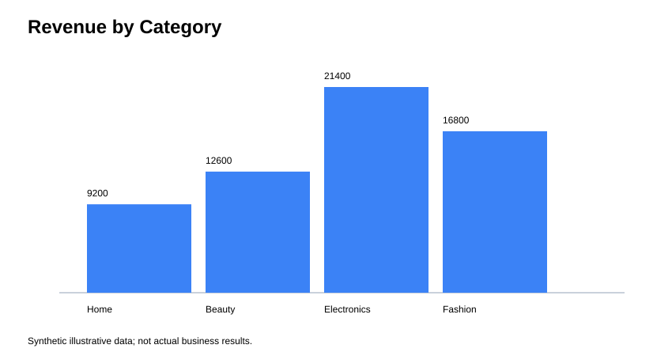
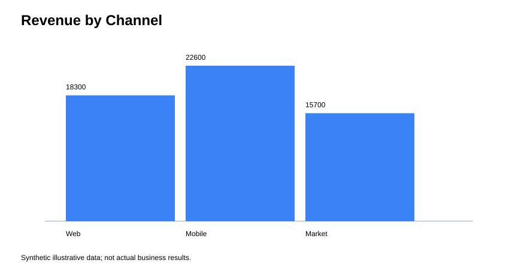
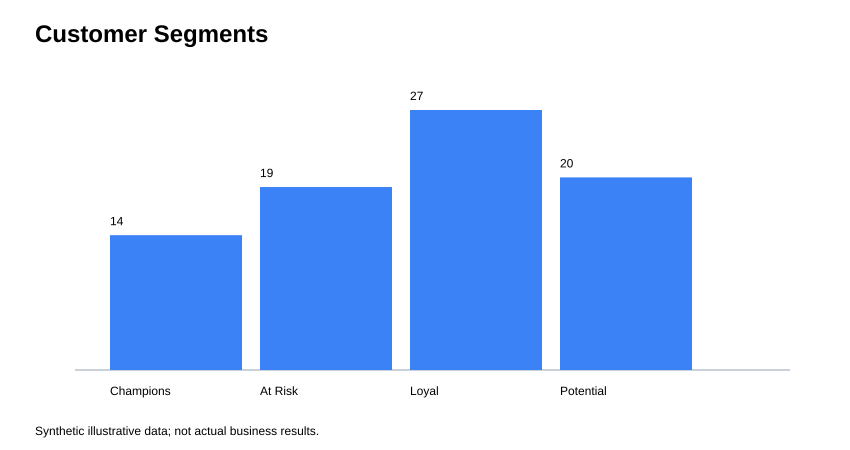

E-Commerce Revenue, Churn & RFM Analytics
Portfolio dashboard — Abdelhamid Moltazim · Data Analyst
Revenue


Customer Segmentation

Business Takeaways
- VIP Champions represent 57.4% of customer monetary value in the RFM model.
- 31.3% of modeled customers are flagged as at risk based on recency.
- Use the segmented output for targeted retention, win-back and loyalty analysis.